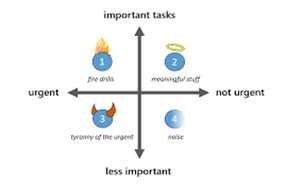
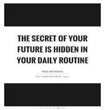
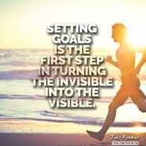
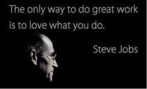
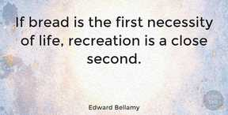
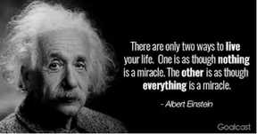
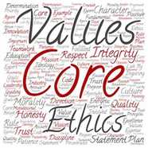

How productive are you in life?
How productive are you in life?
Productivity concept is always there in my mind, but never thought so deeply. Until recently, my friend Biplab asked me the questions:
“How do you feel at the end of a hard day? Do you feel satisfied, fulfilled, or disappointed? Are you productive?”
“may be yes!"–I said with a deep sigh.
In general, when I think about productivity, it comes to our mind about industrial productivity, the input vs output. This is there for ages. But as human beings, living in the modern world, we should also think about our productivity. We have a limited amount of time in a day/life we should also achieve our desired productivity. We are living in a fast and advanced world, we should improve our productivity in the advanced world, we can leverage the technology in our progress.
Does productivity apply to only working people? No. The next question, how can productivity be judged? Here, it can be loosely tied to individual goals. It should be better to come out of our comfort zone and achieve a little more towards individual goals. To give an example, "A bodybuilder is not born bodybuilder". He needs to work on his goal to become a bodybuilder slowly.
In society, there are working people, like doctors, engineers, lawyers, industrial workers, office workers, bus drivers/conductors, farmers, etc. They need to produce their output based on their job profile. Here, I am not talking about just the output of whatever they need to produce based on their work assigned. How much better are they doing? They should try to improve everyday so that the remaining time, they can use for their betterment of life in terms of personal and professional improvement.
In society, there are other kinds of people, homemakers. Especially in developing and underdeveloped countries, the percentage of homemakers is more. They also try to improve their productivity to a great extent. In everybody's life there is a good portion of necessary work, which cannot be neglected. Other than that, there are some tasks which can be optimised and improvised, so that it can help to get some extra amount of time, which can be used for a greater cause.
In Asian countries, 75% of women are homemakers. Aren’t they organized? Absolutely, they are. Managing household chores, managing kids, helping husband/partners, etc. Some of them are doing office work, helpers as well. On a working day, we have specified time to do work. but for homemakers, they don’t have defined time to do their work. They are always on. One of the challenging tasks about homemaking is feeling like we are never entirely done. It’s the same for the people who work outside of home too, they have many tasks on top of the current task they do. That’s the reason to create a to-do list. This is the accountability matrix of tasks in hand.
While writing this article, I was talking to my neighbour, who is a homemaker. I asked, “How is your schedule, how productive are you?” She said, "Full day, I am busy cooking, preparing children for school, basic house chores and then picking them from school, helping them study."
She was trying to explain the bunch of work she does. Then I asked her to explain the start time. As far as I know, school has a fixed time. When she explains to me the details of the schedule for a weekday. She does a lot of ads hoc work, which can be planned properly, like breakfast for the kids, that can be done in one go for all the family members, instead of just at a time for one. Life should not be spent only on household chores. We should be doing these things to get them out of our way, so that we can go on doing things which we like to do and more enjoyable. Like reading books, talking to friends, cherishing life, old memories, playing with kids, taking a walk, exercising, holidaying,
There are many categories to consider improving productivity
1. Do the right thing
Here, I'll take the perspective of working professionals who are appointed to a job. Working more hours, over 8 hrs in a day, makes you more productive? You might add more value, you are not more productive, but you can enjoy more value created in this extra time.
You have a limited amount of time allocated in a day. You can add extra hours for a period of some time, maybe a few months. I have seen people adding extra time to achieve their extra goal. This includes me. While doing my M.Tech along with my job. I was doing extra time to finish the pending study and assignment at the end of each semester. But you cannot continue doing so in the long run. It has a detrimental effect, you might add more mistakes, overloading your working memory, more stress, etc. In the long run, your productivity will decrease. You may not be successful by just adding extra time to your work. we must work smarter than harder.
I want to introduce a term here - deep work. The time you work, it should be focused work, no fooling around. To increase your efficiency, it should be focused work.
2. Do the right way
By now, you know what is needed for you/work. Next you should decide what is required to achieve the work, instead of spending time in hours for the task, how to do. Sometimes we need to acquire or brush up the skills before jumping into the work.
If an athlete decides to join a marathon, he cannot start running the next day. He needs to gain knowledge about running technique, frequency, and food. Sometimes, he needs to hire a coach to guide him through the course.
We all need to focus on the right strategy with a long-term view in mind with the right goals. I know this is not always easy, but we must try to sit down and think on this instead of going in the flow.
The above activities are crucial for us to decide what is needed. But life consists of many right things to achieve in the right way. Again, the priority needs to be decided. I feel there are a few more activities that need to be done as well.
1. Prioritize
There are two ways, prioritize tasks for the day and long term. In the long term - I like to mention that as a goal.
In a day, we have 24 hrs, but we cannot always be productive. Right after the sleep, in the morning, everybody has more energy to concentrate on work. This will be reduced as the day passes by. I prefer to follow the table below for my work priorities.
All your important tasks must be finished early in the day while your body has full energy even if the task takes longer. But I used to follow the contrary, my favourite thing first. Sometimes, it used to be an important task, but not always. Not finishing important tasks will add more pressure slowly. It will create a negative outlook.
2. Organize
Let’s go to a stationery shop or cloth store, shoe store, any other departmental store. “Why are they organized?" Yes, to maximize space, easy to find structure. The storekeeper doesn’t need to use his brain to remember the location. In our life also, organization is important. The human brain should not be used for this structural work. Instead, the brain power should be used to memorise, to innovate, to be creative, to improve life. Ideally, our tasks should be organized in a structured way to make the system clutter free, stress free.
The point is if tasks are not organized, twice or thrice more effort is required to do the same task. So, don’t fall into this under-achiever category. Sometimes, it just needs very minimal effort to make things organised. This is just a small habit change. Over a period, it will automatically be organised.
3. Routine
In day-to-day life, many activities are set as a routine. Like getting up from bed, breakfast, starting with the office, lunch, dinner, to go to bed. This is a common routine for all of us. Along with that, based on job profile, everyone has their prescribed work routine. Again, prioritization is needed on the routine. There is a need to build a system with a flexible framework. In the system, the most important work should be at the beginning of the day, when you have high energy.
Do you remember the story, “Putting stone and sand in a jar”? To make the most out of the day, stone should be dropped first in the jar and then sand.
All the activities are like a habit. Don’t believe in will power, instead build a small habit. Very few lucky people can get something from the will power. The habit is like a system for you. Like, if anyone decides to go to gym, every day at 7am, start to go to gym for 15 mins. Don’t use your brain here, just go every morning. Automatically, this will become part of your routine.
4. Goal
Everyone has their own day-to-day life. Do you want to live the same life three years from now?
If not, you have to set a goal for yourself and you have to define steps for it. The day, today, tomorrow, is not an isolated component of our life, of the goals. Hence, one should know the art of mastering the day as a productive one. There is a definition of weekday and weekend. Both are equally important in our life. The weekend needed to regain the energy for the coming week. So, weekends need to be enjoyed as a productive one. Don’t be frightened to think about the future, instead one must define his goal and plan it accordingly as small as possible towards a bigger goal.
You are reading this article, because you want to excel in your life. So, Though I had a bunch of goals and lists planned, none of them would ever see the light of the day if I changed nothing and continued to live my days exactly as I do them now.
5. Love what you do
If you love what you create, this will create enormous peace of mind. If you love, your passion will follow. You will keep innovating. In this technology driven world, if you want to achieve your goal, make use of technology in your favour for your bigger goal. One might get setbacks. The key is to turn those setbacks into success by focusing on constant and strategic innovation. How can the approach be refined? How can one change what he is doing to more swiftly meet the goal? Mistakes are normal in human life. When can you learn from your mistakes without punishing yourself and take the courage to proceed towards a life where you love what you do, then you will overcome all the odds and become a strong human being?
6. Recreation
I think we always want to do more in a short time. This is human psychology. But study reveals that if you take a short break in-between, productivity improves. So, we should make time for leisure. Don’t let your work sacrifice your family, find a balance between work and leisure. Sometimes, it's good to take short holidays to rejuvenate yourself.
One of my favourite short relaxations exercises is to breathe in deeply, count one->ten slowly, and then exhale, doing the same for 5 mins. In fact, this is also one of the sleep exercises. Few more techniques one can try, like visualization/daydreaming, listening to music or playing musical instruments, try to keep the mind blank for some time.
The productivity is directly linked to routines, goals, prioritization, etc. I feel, few psychological thinking will help as well.
7. Positive thinking & attitude
Positive thinking is a mental attitude which focuses on the good in any situation. It can have a big impact on physical and mental health. Research reveals that this is not just about being happy or displaying an upbeat attitude, this is more, it will create value in our life, it will help to look at the world with a positive outlook. Even, the negative outlook will be accepted in a positive angle. In life, everything is not in our control. We can only control those which are under our influence. We will stop blaming those which are not in our control. Positive thinking has positive benefits in life, better stress management and handling skills, physical well-being, less depression, longer life span. Everybody has lots of abilities, the question comes, how to use those abilities in a positive angle.
Few years back, I met one psychology trainer, Ranjit Singh, who is specialists for sports. “What is your role in sports, how do you contribute to sports activities” “I have an invisible role, but BIG role. I work on improving their attitude,” He said laughingly.
Later I realised, it’s indeed a big role. They help to train the athlete about their attitude. So, a positive attitude is applicable to all of us. This is just a practice and will help us in building physical, mental, social, creative skills.
8. Right Values
I believe the right values are very important in our lives, this will guide and motivate us towards our action, decision, attitude. This must be there in our fundamental belief system. Values are essential to ethics; ethics are connected to human actions and how they behave. The values are learnt in our childhood, we have been taught which is right and wrong. They are very much stable over a period, minimally changed. The right values may not have a direct relation to productivity. But this will help to achieve one’s goal with the right attitude.
Life is fun, at the time it should be organised as well. I think, with the above-mentioned principles, anyone can improve their life, for better, more creative, more expanding. It will help to lead a less stressful, more fun, happier life.